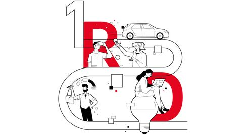

Responsibility for the future
The series 'The Bigger Picture' shows how criteria for ecological and social sustainability determine Audi's actions.
Audi Environmental Foundation is committed to clean waters
The Audi Environmental Foundation actively fights plastic litter by promoting projects to protect our rivers and oceans worldwide.

Sustainable right down to the very last detail
To become the leading carbon-neutral premium provider, Audi is optimizing all parts of its value chain. An overview of key improvements and initiatives.